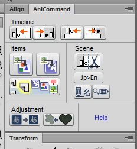

This is the help document for AniCommand Panel. Please choose a topic from the left.

These tools automate many common and time-consuming tasks while animating in Adobe Flash, allowing you to focus on refining your craft. These tools are particularly useful when exporting HTML5 from Flash, because they make certain annoyances less cumbersome. For example, you can animate Graphics and Movie Clips with Classic Tweens, but if you animate a bitmap or vector art directly, the tween will not export to HTML. Furthermore every animated object needs to be placed onto its own layer.
Instead, you can easily select all your art, run the Encapsulate in Graphic command, then run the Plop to Timeline command, and begin animating immediately.
The AniCommand collection was developed by Joseph Jacir from 2013 onward, along with an associated GUI for them. The timeline commands, however, were written by Todd Slaughter in 2012, and graciously made public in this thread.
With the exception of Todd Slaughter's timeline commands, these commands and this documentation are all available on my GitHub profile.
I believe this makes many improvements in the Flash workflow, which seems to have never adjusted to it's transition to a tool primarily for animators. Thank you for using it; I welcome any feedback.
Back to my homepage and animation reel
Back to my development page